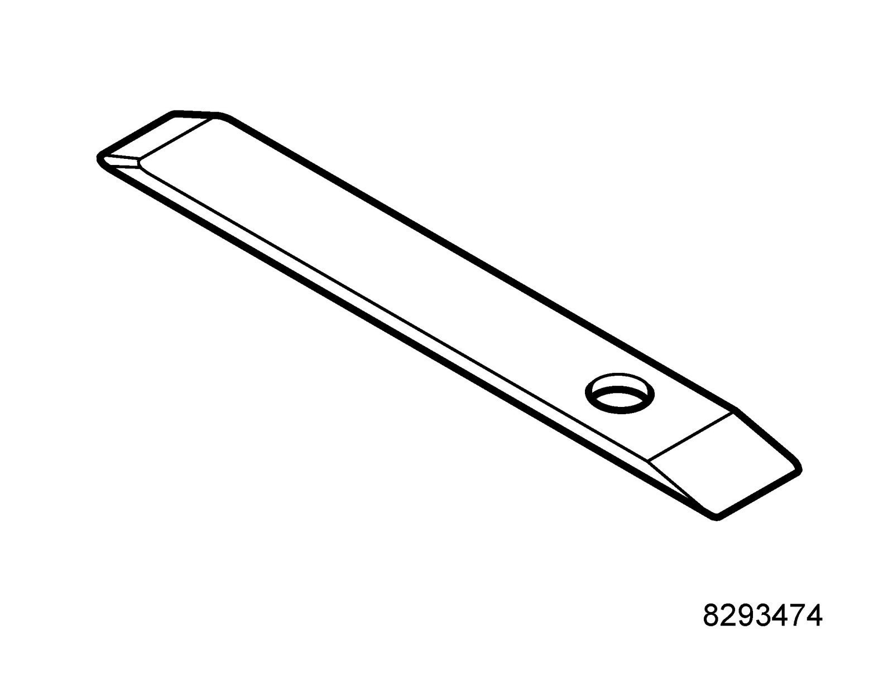
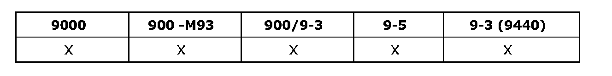
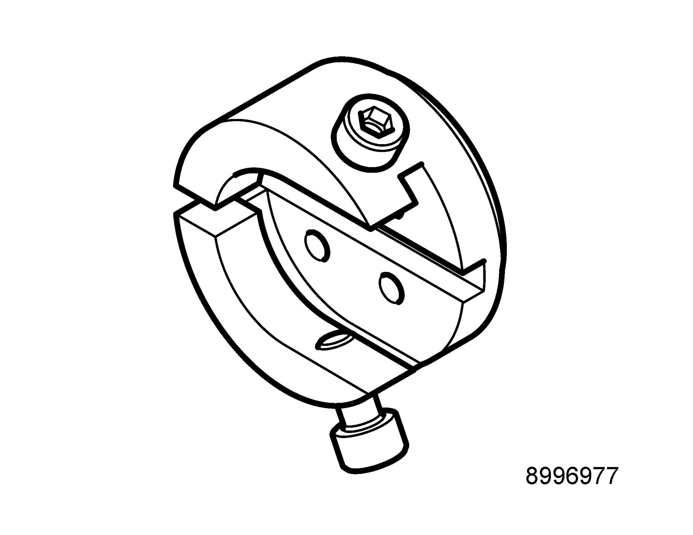

Parking Brake System: Tools and Equipment
82 93 474 Removal tool
Group: Body

89 96 969 Resetting tool, Handbrake

KM-6007
Used together with 89 96 977 Adapter, resetting tool, Handbrake.
86 12 814 Toolboard T2 Chassis-body
Group: Chassis
89 96 977 Adapter, resetting tool, Handbrake

KM-6007-20
Used together with 89 96 969 Resetting tool, Handbrake.
86 12 814 Toolboard T2 Chassis-body
Group: Chassis